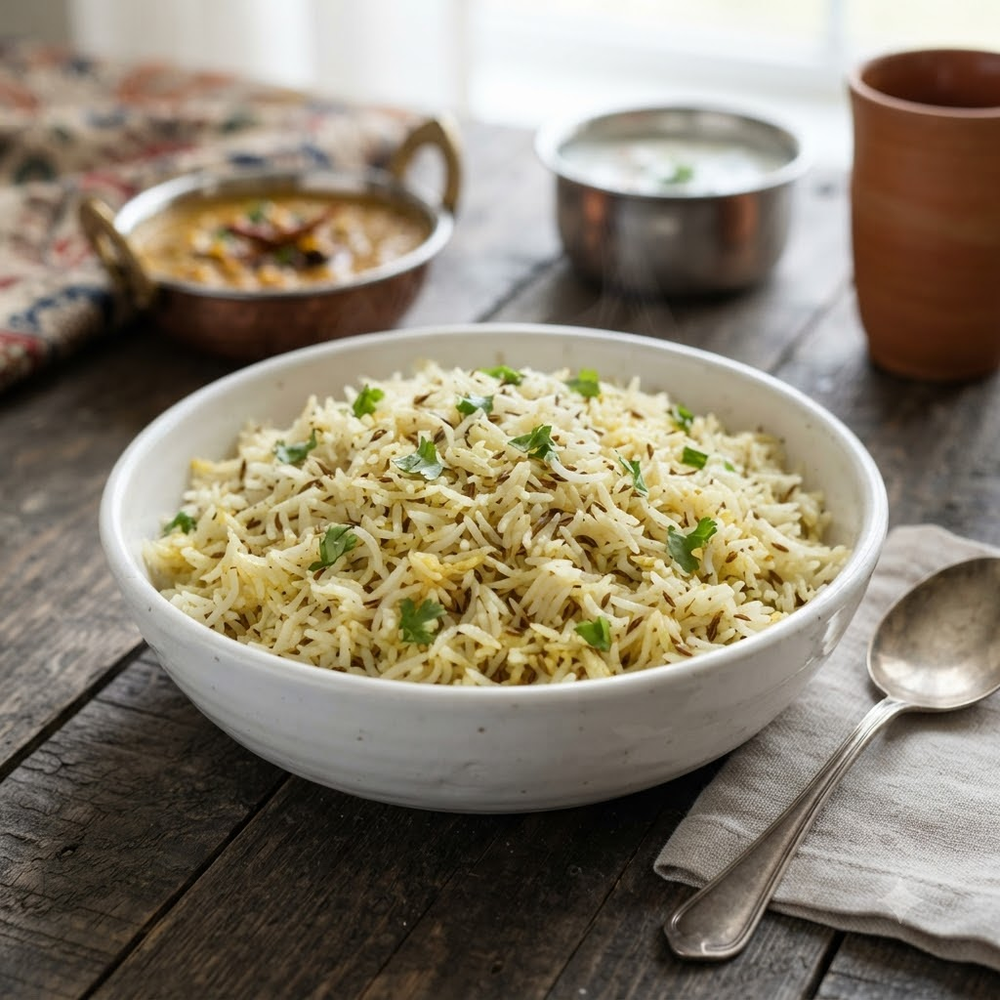

Jeera Rice (Cumin Rice)

Jeera Rice (Cumin Rice)
Chef Magic – Sauté + Boil Auto 18 min — Serves 4
Gluten-Free • Vegan • Everyday
🧑🍳 Chef Magic🍽 Serves 4
Prep ahead: Soak the rice for 15 minutes and drain well before using, for fluffier grains.
Ingredients
- 1.5 cups basmati rice, soaked 15 min
- 1.5 tbsp ghee or oil
- 1.5 tsp cumin seeds (jeera)
- 1 bay leaf (tej patta)
- 2.5 cups water
- Salt to taste
- Chopped coriander (dhania) to garnish
Method
1Add ghee, cumin seeds and bay leaf to the jar; select Sauté (Speed 2–4, ~130–160°C) until the seeds splutter and turn fragrant.
2Add the drained rice and sauté gently for 2 minutes to coat each grain.
3Add water and salt; select Boil (Speed 1–2, 100°C) and cook until the water is absorbed and the rice is fluffy.
4Rest covered for 5 minutes, then fluff with a fork and garnish with coriander.
Tip: Resist stirring too much once the rice starts cooking — it breaks the grains and makes the rice sticky.